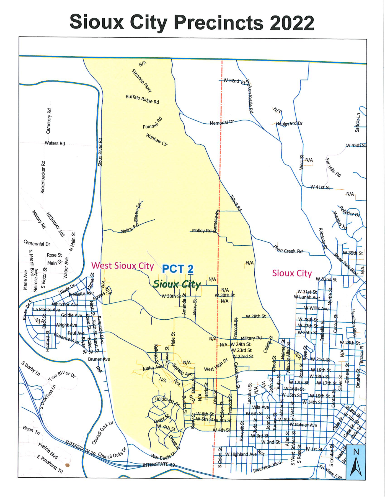
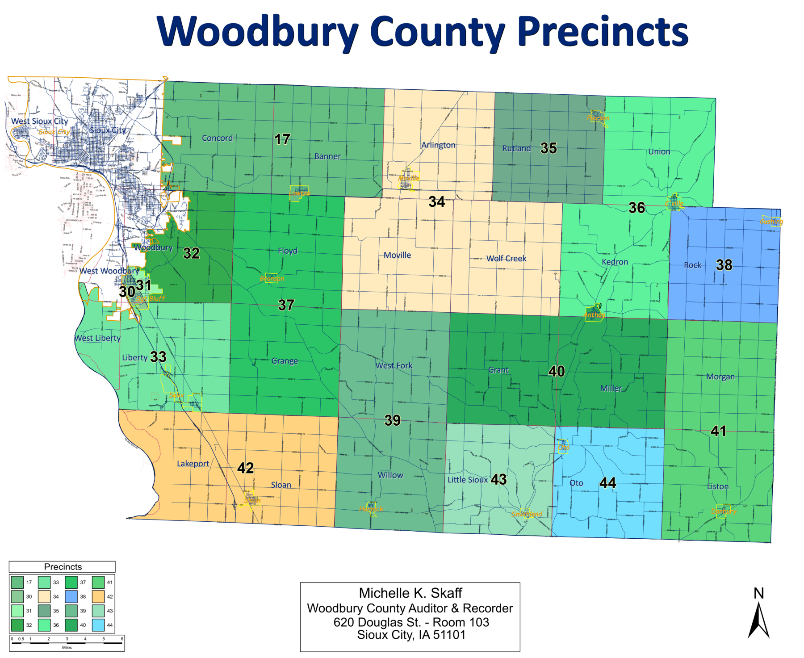
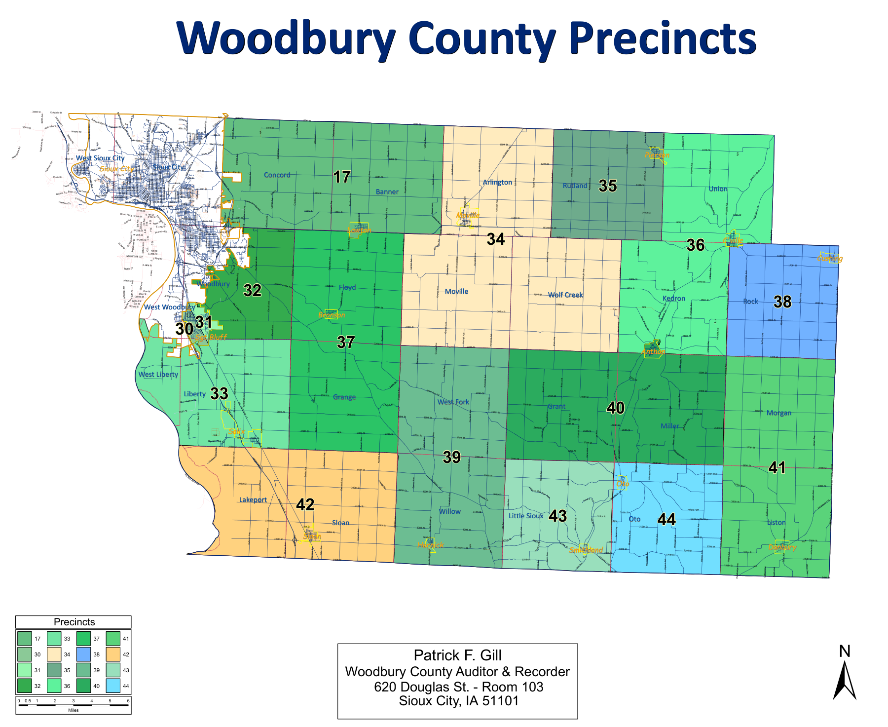
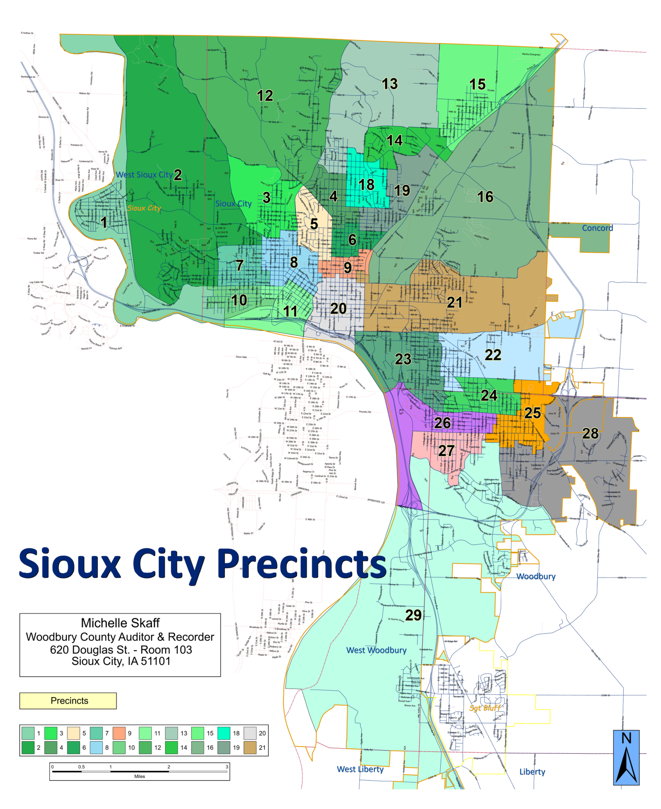
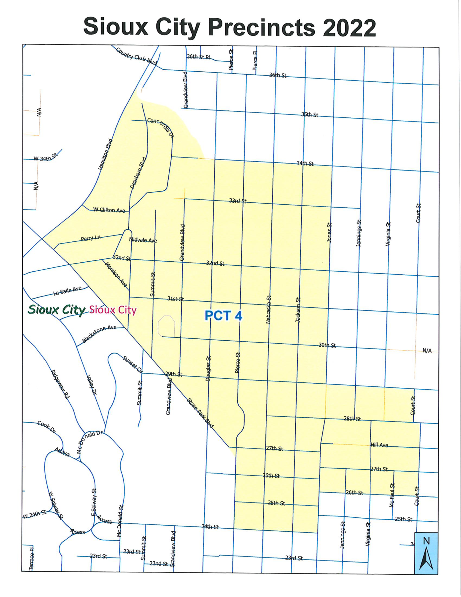
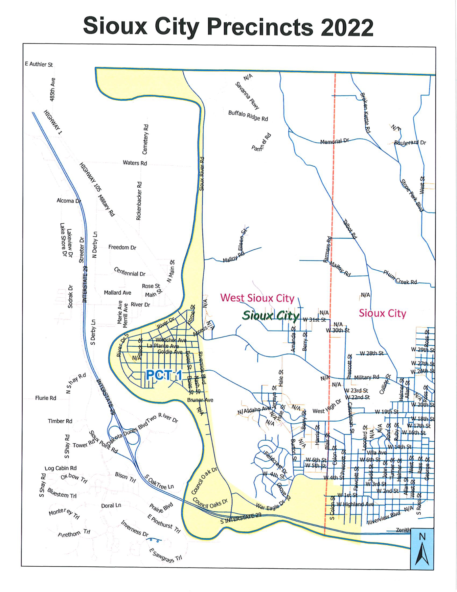
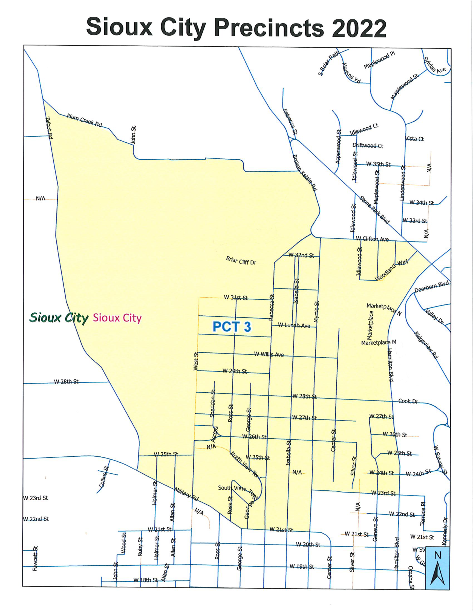
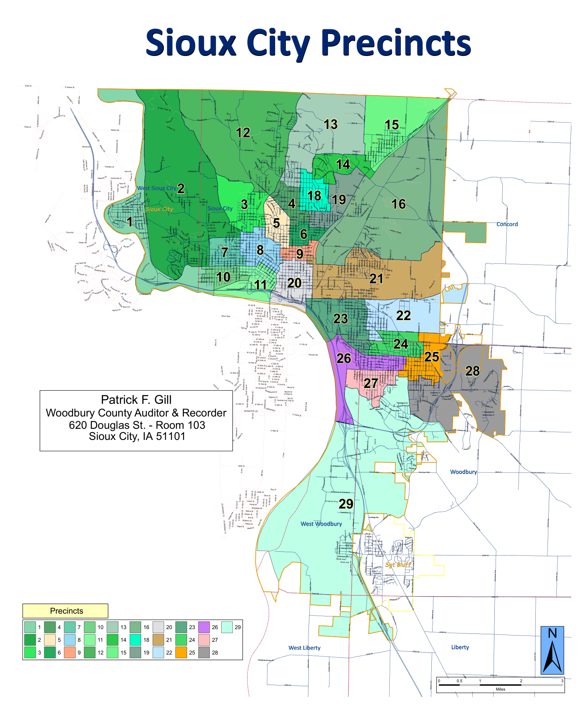
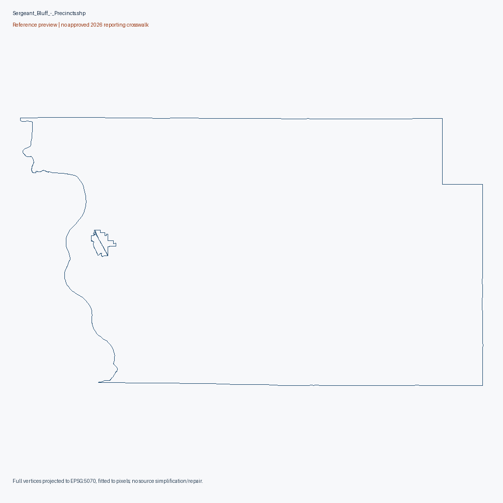
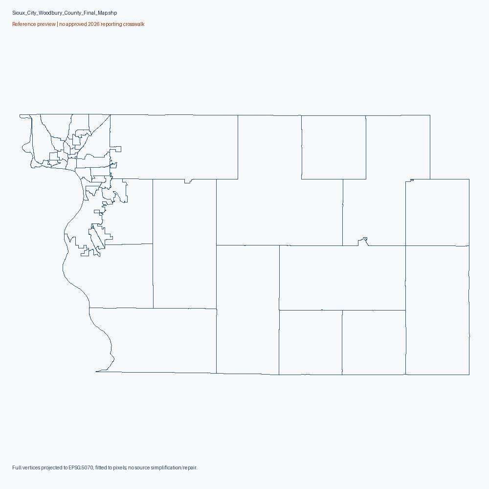

Precinct 2 Map
actual map asset; extent/vintage must be read from map, no approved reporting crosswalk
Original source download Primary sourcesource PDF text/metadata retained in pdf-audit.json; edit/retrieval date is not adoption date

Reference maps. No approved November 2026 reporting-unit crosswalk.
Source-native units remain unlocated until documentary crosswalk; aggregate/unassigned city areas and partial city files retained separately.
Exact source-native diagnostics (gzip JSON)
actual map asset; extent/vintage must be read from map, no approved reporting crosswalk
Original source download Primary sourcesource PDF text/metadata retained in pdf-audit.json; edit/retrieval date is not adoption date

actual map asset; extent/vintage must be read from map, no approved reporting crosswalk
Original source download Primary sourcesource PDF text/metadata retained in pdf-audit.json; edit/retrieval date is not adoption date

actual map asset; extent/vintage must be read from map, no approved reporting crosswalk
Original source download Primary sourcesource PDF text/metadata retained in pdf-audit.json; edit/retrieval date is not adoption date

actual map asset; extent/vintage must be read from map, no approved reporting crosswalk
Original source download Primary sourcesource PDF text/metadata retained in pdf-audit.json; edit/retrieval date is not adoption date

actual map asset; extent/vintage must be read from map, no approved reporting crosswalk
Original source download Primary sourcesource PDF text/metadata retained in pdf-audit.json; edit/retrieval date is not adoption date

actual map asset; extent/vintage must be read from map, no approved reporting crosswalk
Original source download Primary sourcesource PDF text/metadata retained in pdf-audit.json; edit/retrieval date is not adoption date

actual map asset; extent/vintage must be read from map, no approved reporting crosswalk
Original source download Primary sourcesource PDF text/metadata retained in pdf-audit.json; edit/retrieval date is not adoption date

actual map asset; extent/vintage must be read from map, no approved reporting crosswalk
Original source download Primary sourcesource PDF text/metadata retained in pdf-audit.json; edit/retrieval date is not adoption date

partial city reference, not countywide geometry
Source aggregate/unassigned labels retained, not individual precincts: ['Unassigned']
Original source download Primary sourcereprecincting-era SOS collection; source-specific legal effective date unknown
3 native records; 2358 vertices. Full native attributes/vertices

partial city reference, not countywide geometry
Municipality may span counties. Association is navigation only; original extent not clipped or allocated.
Original source download Primary sourcereprecincting-era SOS collection; source-specific legal effective date unknown
44 native records; 13404 vertices. Full native attributes/vertices

reference geometry; current 2026 equivalence unapproved
Native filename contains Proposed/Amend: no approval inferred.
Original source download Primary source2021/2022 reprecincting-era source publication; individual adoption/effective date unverified
44 native records; 13404 vertices. Full native attributes/vertices

{
"2024/candidate_reporting_units": 44,
"2024/candidate_administrative_controls": 1,
"2024/registration_statistics_units": 44,
"2024/turnout_context_units": 44,
"2024/status_context_units": 44,
"2022/candidate_reporting_units": 44,
"2022/candidate_administrative_controls": 1,
"2022/registration_statistics_units": 44,
"2020/candidate_reporting_units": 44,
"2020/candidate_administrative_controls": 1,
"2020/registration_statistics_units": 44
}